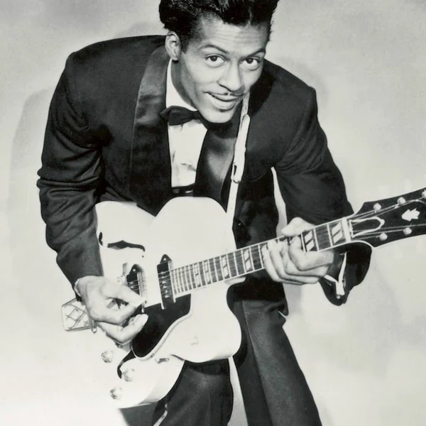
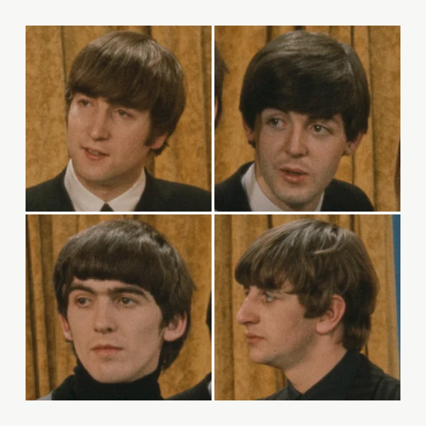
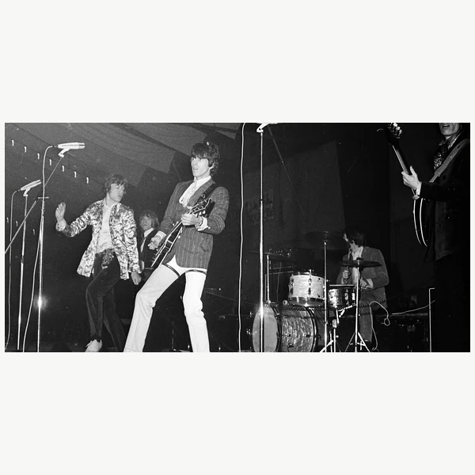
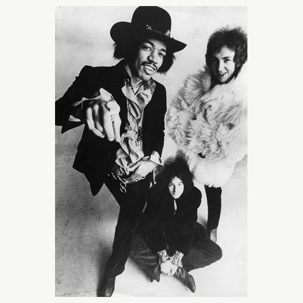
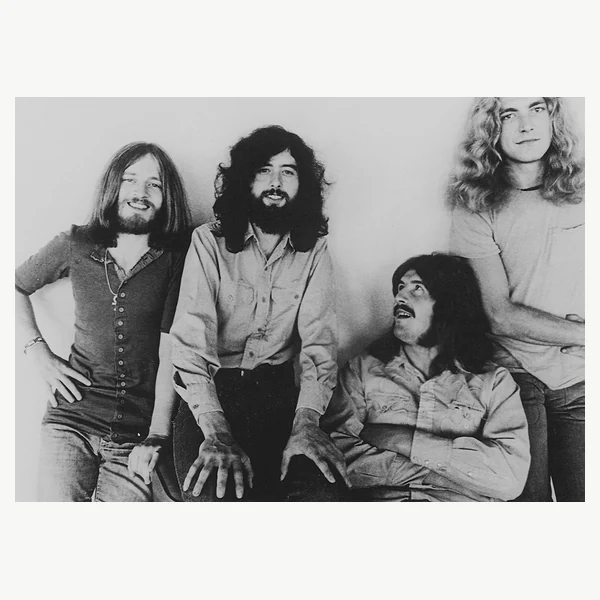
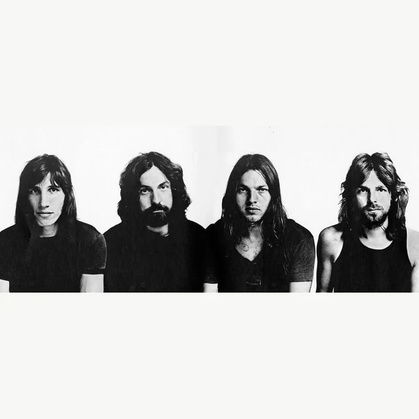

Classic Rock is a broad label for Rock music associated mainly with the 1960s and 1970s, although many radio stations include music from the 1980s and other periods as well. It covers styles that grew out of Rock and Roll, with electric guitars and band performances providing much of the familiar sound. Some of it is closely related to Blues, while other forms became more ambitious in their arrangements or pushed the volume considerably higher. There is room for short, direct songs as well as lengthy pieces that give the musicians time to stretch out. What makes the category unusual is that most of this music was not called Classic Rock when it was new. It was simply Rock, made by people who often disagreed about what Rock should sound like. The name came later, when radio stations began grouping certain recordings together as familiar favourites. Classic Rock is therefore as much a way of remembering an era as it is a description of the music itself.
Classic Rock is a name that became established through radio programming, particularly during the 1980s. Stations wanted a recognisable format built around Rock recordings that audiences already knew, rather than relying entirely on new releases. Calling the music classic suggested that it had stood the test of time and deserved to remain in regular circulation. The format developed out of earlier Rock radio approaches that had given albums and longer recordings more attention than ordinary singles stations did. It also helped turn a loose collection of musical movements into something that sounded like one established tradition. The word classic is not a guarantee of age or quality, of course. Its meaning changes as stations add later decades to their playlists and quietly leave other music out. The term tells us which parts of Rock history became familiar enough to be treated as permanent, not which recordings were universally regarded as important when they first appeared.
The music now called Classic Rock grew from the changes that followed the rise of Rock and Roll in the 1950s. Rock and Roll itself had strong roots in Black American Rhythm and Blues as well as Country, and its growing popularity helped bring these sounds into contact with a wider youth audience. During the 1960s, musicians began expanding the possibilities of Rock through louder amplification, new recording techniques and influences from Blues and Folk. Psychedelic Rock encouraged experimentation, while the album became a more important way of presenting music beyond a sequence of unrelated singles. In the 1970s, Hard Rock brought heavier guitar sounds to large audiences, and Progressive Rock gave more attention to extended compositions and complex arrangements. Live concerts grew into a major business, with increasingly large venues becoming part of Rock culture. Other movements, including Punk, pushed back against the scale and polish of this approach. By the 1980s, radio stations were packaging much of the earlier music as Classic Rock. The label helped older recordings reach new generations, even though the selection was often much narrower than the history behind them.
Electric guitar is central to much Classic Rock, particularly the use of repeating riffs and solos, but the music also depends on how the bass and drums hold everything together. Many styles draw on Blues rhythms and chord patterns, giving the songs a direct pulse even when the arrangements become elaborate. Some bands favour a rough sound that leaves the instruments exposed, while others use layered recording techniques to build something closer to a studio production than a straightforward live performance. Keyboards and acoustic instruments can be important, and the vocals range from restrained storytelling to powerful singing intended to carry across a large concert venue. The differences become especially clear when comparing shorter Rock and Roll influenced songs with more expansive Progressive Rock. Both can appear under the same Classic Rock label despite having rather different priorities. That variety is part of the reason the category is useful for radio and less useful as a precise description of how music is made.






Much of the music now associated with Classic Rock emerged during decades of major social change. Rock became closely connected with youth identity, debates about authority and movements questioning established attitudes towards war and personal freedom. Not every band took a political position, and commercial success often mattered as much as rebellion, but the music gave young audiences a visible culture of their own. Its history also contains an uncomfortable contradiction. Early Rock drew heavily on Black musical traditions, yet the later image of the genre increasingly centred white male performers, while women and musicians of colour were often treated as exceptions. The Classic Rock radio format reinforced some of those habits by repeatedly playing a relatively narrow selection of familiar music. That helped preserve important recordings, but it also influenced which parts of Rock history were remembered and which were easier to overlook. Music that once upset parents eventually became a dependable radio format for adults. There is nothing wrong with keeping old music alive, but nostalgia should not get to write the whole history.